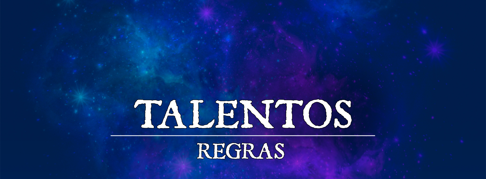

Talentos Expandidos
Bem-vindo à página dos Talentos Expandidos do servidor de RPG Critical Bastards! Aqui você encontrará uma coleção diversificada de talentos exclusivos, cuidadosamente criados para aprimorar sua experiência de jogo e adicionar novas possibilidades aos seus personagens. Nossos talentos foram desenvolvidos com atenção aos detalhes, equilíbrio e, é claro, muita criatividade. Explore as habilidades aprimoradas, poderes místicos e dons extraordinários que esperam por você nesta seleção única. Desbloqueie o potencial máximo do seu personagem e embarque em aventuras inesquecíveis.
É importante ressaltar que todos os talentos expandidos disponibilizados neste site são considerados conteúdo homebrew, o que significa que eles foram desenvolvidos exclusivamente para o servidor Critical Bastards. Como tal, esses talentos estão sujeitos a ajustes e modificações contínuas à medida que buscamos um equilíbrio ideal e refinamos a jogabilidade. Nossa equipe está comprometida em fornecer uma experiência divertida e justa para todos os jogadores, e seu feedback é valorizado e incentivado. Portanto, lembre-se de verificar regularmente as atualizações e revisões dos talentos expandidos para se manter atualizado com as últimas versões.
Simbióse Druídica
Pré-requisito: Druida
Ao passar um bom tempo estudando os segredos da natureza e se conectando profundamente com as energias da floresta, você despertou para a simbiótica harmonia entre as diversas formas de vida se tornando um receptáculo vivo da essência da natureza.
Você ganha a habilidade de canalizar a natureza de forma harmoniosa, combinando seus vários aspectos:
Raízes em Crescimento.Você sempre tem as magias barkskin e guardian of nature preparadas (desde que você possa conjurá-las).
Sustento.Você não precisa de comida desde que desfrute do sol ou mantenha contato com solo fértil por 10 minutos todos os dias.
Abraço da Natureza. Conjurar barkskin não requer mais que você se concentre na magia.
Magia Ancestral do Gelo
Você entrou em contato com um pedaço de conhecimento antigo que lhe despertou a sabedoria necessária para utilizar uma magia esquecida utilizada pelos gigantes que lutaram na antiga guerra contra os dragões.
Você acessou o conhecimento dos Antigos Gigantes de Gelo, adquirindo os seguintes atributos:
Veias Gélidas.Como uma ação bônus, você resfria seu sangue, enrijecendo seus músculos. Até o início de seu próximo turno, você se torna resistente a dano de fogo, mas não pode se beneficiar de vantagem em jogadas de ataque. Você pode usar essa habilidade um número de vezes igual ao seu bônus de proficiência. Você recupera todos os usos em um descanso longo.
Lança de Gelo. Caso você tenha uma mão livre, imediatamente antes de realizar um ataque como parte da sua ação de ataque, você pode criar uma Lança de Gelo para arremessar em seus inimigos. A lança derrete se você a soltar, entregá-la a outra criatura ou após acertar ou errar o alvo.
Além disso, você pode fortalecer a lança criando uma arma devastadora. Quando fizer isso, o número de dados de dano da lança aumenta para corresponder à sua proficiência e seu alcance se torna 120/240. Depois de fortalecer sua lança, você só pode fazê-lo novamente após um descanso curto ou longo.
A lança de gelo tem as mesmas estatísticas de uma lança normal, exceto que seu dano é de frio e seu dado de dano é baseado em seu tamanho, conforme segue:
- Médio ou menor: 1d6.
- Grande: 1d8
- Enorme: 1d10
- Gigantesco: 1d12
Lança de Gelo Fortalecida. A lança de gelo fortalecida tem as mesmas estatísticas da lança de gelo, exceto que o alcance se torna 120/240 e o número de dados de dano da arma é multiplicado pelo seu bônus de proficiência.
Magia Ancestral de Fogo
Você entrou em contato com um pedaço de conhecimento antigo que lhe despertou a sabedoria necessária para utilizar uma magia esquecida utilizada pelos gigantes que lutaram na antiga guerra contra os dragões.
Você acessou o conhecimento dos Antigos Gigantes de Fogo, adquirindo os seguintes atributos:
Arma Aquecida.Quando você termina um descanso curto ou longo, pode encantar uma arma corpo a corpo com o elemento do fogo. O encantamento dura até você fazer um descanso curto ou longo, ou até morrer. Uma vez que a arma tenha sido encantada, você pode acender a arma como uma ação bônus, transformando o dado de dano da arma em dano de fogo. Se você soltar ou embainhar a arma, o fogo se apaga. Você também pode apagar o fogo em seu turno (não requer ação).
Inflamar.Quando você causa dano de fogo a uma criatura em seu turno, as chamas persistem e marcam brevemente o alvo. Até o final do seu turno, você pode gastar sua ação bônus para fazer pequenas chamas explodirem de cada alvo marcado, fazendo com que eles tenham desvantagem em jogadas de ataque até o início de seu próximo turno. Você pode usar essa habilidade um número de vezes igual ao seu bônus de proficiência. Você recupera todos os usos em um descanso longo.
Magia Ancestral das Tempestades
Você entrou em contato com um pedaço de conhecimento antigo que lhe despertou a sabedoria necessária para utilizar uma magia esquecida utilizada pelos gigantes que lutaram na antiga guerra contra os dragões.
Você acessou o conhecimento dos Antigos Gigantes das Tempestades, adquirindo os seguintes atributos:
Se você forçar uma criatura a fazer uma jogada de resistência usando esse recurso, a CD é 8 + seu bônus de proficiência + o modificador de habilidade usado para o ataque.
Lança de Vento.Você assume o controle do vento para que seus ataques passem através dele. Você tem vantagem em jogadas de ataque à distância contra criaturas que estejam voando. Você pode obter vantagem um número de vezes igual ao seu bônus de proficiência. Você recupera todos os usos após um descanso longo.
Além disso, quando você acerta uma criatura que possui velocidade de voo que seja enorme ou menor com um ataque à distância, você pode usar sua ação bônus para forçar o alvo fazer uma jogada de resistência de Força; em caso de falha, a velocidade de voo do alvo é reduzida para 0 até o final do próximo turno dele. Se você obtiver um acerto crítico, pode reduzir a velocidade da criatura, independentemente de seu tamanho.
Raios.Você pode sintonizar o poder das tempestades para arremessar raios elétricos com suas armas. Quando você faz um ataque com arma à distância, você pode alterar o dano da arma para dano de raios para aquele ataque.
Magia Ancestral de Pedra
Você entrou em contato com um pedaço de conhecimento antigo que lhe despertou a sabedoria necessária para utilizar uma magia esquecida utilizada pelos gigantes que lutaram na antiga guerra contra os dragões.
Você acessou o conhecimento dos Antigos Gigantes de Pedra, adquirindo os seguintes atributos:
Se você forçar uma criatura a fazer uma jogada de resistência usando esse recurso, a CD é 8 + seu bônus de proficiência + o modificador de habilidade usado para o ataque.
Firmeza.Você tem vantagem em testes de habilidade e jogadas de resistência que tentam movê-lo contra sua vontade, desde que esteja tocando o chão. Além disso, quando você está agarrado por uma criatura, ela não pode arrastá-lo contra sua vontade, a menos que seja pelo menos dois tamanhos maior que você.
Punhos Martelo.Como uma ação bônus, você cobre seus punhos com uma camada espessa de pedra até o final de seu turno. Até o final de seu turno, seus ataques desarmados possuem as seguintes propriedades:
- Derrubada. Quando você acerta uma criatura que seja Enorme ou menor, ela deve ter sucesso em uma jogada de resistência de Força para não ser derrubada. Se você obtiver um acerto crítico, a criatura falha automaticamente.
- Golpe Debilitante. Quando você acerta uma criatura que está caída, o alvo deve ter sucesso em uma jogada de resistência de Constituição ou ter sua velocidade reduzida pela metade. Se você obtiver um acerto crítico, a criatura falha automaticamente.
Você pode usar cada propriedade uma vez por turno.
Estilo de Combate Avançado
Pré-requisito: Pelo menos um dos seguintes Estilos de Combate
Sua experiência em treinamento marcial concedeu-lhe técnicas avançadas, tornando-se especializado em seu estilo. Quando você adquire essa habilidade, escolhe uma versão avançada de um de seus estilos de combate, modificando a forma como você o utiliza. Você pode escolher esse talento várias vezes. Cada vez que o fizer, deve escolher um estilo de combate diferente.
Golpe Transpassante (Combate com Armas Pesadas). Como uma ação bônus, você pode mudar a empunhadura de sua arma para realizar um ataque de varredura. Em seu próximo ataque com arma usando uma arma corpo a corpo pesada, as seguintes condições se aplicam. Você não pode se beneficiar de vantagem ou desvantagem nesse ataque; você pode atingir um número de inimigos dentro do alcance de sua arma igual ao seu bônus de proficiência. Role o ataque uma vez e use o resultado para determinar se o ataque acerta cada criatura. Esse ataque não pode ser rolado novamente. Você pode usar essa habilidade um número de vezes igual ao seu bônus de proficiência, e recupera todos os usos após um descanso longo.
Postura Poderosa (Combate com Duas Armas). Quando você usa sua ação bônus para fazer um ataque, você pode usar ambas as armas. Você usa uma das armas para fazer a jogada de ataque e, se acertar uma criatura, adiciona os dados de dano de ambas as armas à rolagem de dano.
Guarda Defensiva (Interceptação). Quando você intercepta um ataque, você reduz o dano em 2d10 + proficiência (em vez de apenas um dado). Além disso, se você reduzir o dano a 0, pode realizar essa reação uma vez adicional antes do início de seu próximo turno.
Arremesso Preciso (Combate com Armas Arremessáveis). Quando você acerta e causa dano a uma criatura com um ataque à distância usando uma arma arremessável, o alvo deve ter sucesso em uma jogada de resistência de Destreza ou a arma ficará presa nele. O alvo sofre uma penalidade de -1 nas jogadas de ataque para cada arma presa nele (máximo = metade de sua proficiência, arredondado para cima). Uma criatura pode usar sua ação para remover qualquer arma presa em seu corpo ou no corpo de um aliado.
Empunhadura de Ferro
Pré-requisito: Proficiência com arcos longos, bestas ou estilingues.
Você aprende a modificar armas de corda para se beneficiar de força.
Durante um descanso longo você pode modificar arcos, bestas ou fundas (estilingues) aumentando o peso de puxada, conferindo a arma o traço Puxada Pesada. Essa modificação requer manutenção e a arma perde esse traço depois que você termina seu próximo descanso longo. A quantidade de armas que você pode modificar durante um descanso é igual ao seu bônus de proficiência.
Puxada Pesada. Quando você faz um ataque com uma arma com o traço puxada pesada, você use seu modificador de Força, ao invés de Destreza, para a jogada de ataque e dano e a arma não pode disparar além do seu alcance curto.
Adicionalmente, quando você tem um acerto crítico em uma jogada de ataque com essa arma, você pode tentar atingir uma criatura numa linha reta atrá do alvo e que esteja no alcance da arma. Use o mesmo valor da rolagem para o ataque e o dano em ambas criaturas.
Talentos de Conjuração
Os talentos Svirfneblin Magic, Spell Sniper, Magic Initiate, Fey Teleportation, Drow High Magic, Aberrant Dragonmark, Wood Elf Magic sofrerão as seguintes alterações:
Caso você possua o traço “Conjuração” ou “Magia do Pacto”, as magias aprendidas com o talento serão adicionadas na sua lista de magias aprendidas/preparadas. Caso possua mais de uma classe com esse traço, você escolhe a lista de uma das classes para adicionar as magias do talento.
Caso você não possua os traços acima Conjuração ou Magia do Pacto, você escolhe entre Carísma, Sabedoria ou Inteligência para ser a habilidade de conjuração das magias aprendidas com o talento.
Alerta
Sempre atento ao perigo, você obtém os seguintes benefícios:
- Você ganha um bônus em suas rolagens de iniciativa igual ao seu bônus de proficiência.
- Você não pode ser pego de surpresa enquanto estiver consciente.
- Imediatamente após rolar a Iniciativa, você pode trocar sua Iniciativa com a Iniciativa de um aliado disposto na mesma batalha. Você não pode fazer essa troca se você ou o aliado estiver incapacitado.
Atleta
Você passou por um extenso treinamento físico para obter os seguintes benefícios:
- Aumente em 1 o valor do seu atributo de Força ou Destreza, até um máximo de 20.
- Quando você estiver caído, levantar consome apenas 5 pés do seu deslocamento.
- Escalar não lhe custa deslocamento adicional.
- Quando você realizar um salto longo ou um salto alto sem um impulso inicial, você não reduz a distância percorrida pela metade.
- Quando realizar um ataque a distância com uma arma de arremesso o alcance curto e longo da arma são duplicados.
- Sua capacidade de carga é duplicada.
Investida
Você tem pernas fortes e reflexos rápidos para alcançar seus inimigos em combate, concedendo os seguintes benefícios:
- Aumente em 1 o valor do seu atributo de Força ou Destreza, até um máximo de 20.
- Quando você realizar a ação de disparada, você pode se mover 10 pés adicionais nesta ação.
- Quando se mover pelo menos 20 pés em linha reta e fizer um ataque como parte da ação de ataque contra uma criatura, você pode se beneficiar do seu impulso. Caso acerte, você pode empurrar o alvo até 10 pés, desde que ele não seja mais do que uma categoria de tamanho maior que você, ou pode adicionar 1d8 a jogada de dano.
Duelista Defensivo
Pré-requisito: Destreza 13 ou superior
Quando estiver empunhando uma arma de acuidade com a qual você seja proficiente e outra criatura acertar você com um ataque corpo a corpo, você pode usar sua reação para adicionar seu bônus de proficiência à sua CA para esse ataque, potencialmente fazendo o ataque falhar.
Adicionalmente, quando fizer uma criatura errar um ataque usando essa reação, você pode fazer um ataque de oportunidade contra esta criatura como parte da mesma reação.
Rugido Aterrador (Dragon Fear)
Pré-requisito: Dragonborn (Dracônico)
Quando enfurecido, você irradia ameaça. Você obtém os seguintes benefícios:
- Aumente em 1 o valor do seu atributo de Força, Constituição ou Carisma, até um máximo de 20.
- Em vez de exalar energia destrutiva, você pode gastar uma utilização do seu traço Arma de Sopro para rugir, forçando cada criatura de sua escolha em um raio de 30 pés a fazer um teste de resistência de Sabedoria (CD 8 + seu bônus de proficiência + o modificador de habilidade do atributo aumentado por este talento). Um alvo tem sucesso automático no teste se não puder ouvi-lo ou vê-lo. Em caso de falha no teste, um alvo fica amedrontado por 1 minuto. Se o alvo amedrontado sofrer qualquer dano, ele pode repetir o teste de resistência, encerrando o efeito sobre si mesmo em caso de sucesso.
Resistente (Durable)
Robusto e resistente, você obtém os seguintes benefícios:
- Aumente em 1 o valor do seu atributo de Constituição, até um máximo de 20.
- Quando rolar um dado de vida para recuperar pontos de vida, o número mínimo de pontos de vida que você recupera será igual ao dobro do seu modificador de Constituição (mínimo de 2).
- Como uma ação, role um número de dados de vida igual à, no máximo, metade do seu bônus de proficiência (arredondado para cima), adicione seu modificador de Constituição e recupere uma quantidade de pontos de vida igual ao total (mínimo de 1). Depois de usar essa habilidade, você deve terminar um descanso longo antes de poder usá-la novamente.
Fortitude Anã
Pré-requisito: Anão
Você tem o sangue de heróis anões fluindo em suas veias. Você obtém os seguintes benefícios:
- Aumente em 1 o valor do seu atributo de Constituição, até um máximo de 20.
- Sempre que você usar a ação esquiva em combate, você pode gastar até metade do seu bônus de proficiência (arredondado para baixo, mínimo de 1) de dados de vida para se curar. Role os dados, adicione seu modificador de Constituição e recupere uma quantidade de pontos de vida igual ao total (mínimo de 1).
Mestre Elemental
Pré-requisito: Capacidade de conjurar pelo menos uma magia
- Aumente em 1 o valor do seu atributo de Inteligência, Sabedoria ou Carisma, até um máximo de 20.
- Quando você adquire este talento, escolha um dos seguintes tipos de dano: ácido, frio, fogo, raio ou trovão.
- As magias que você conjura ignoram a resistência a dano do tipo escolhido. Além disso, quando rolar o dano de uma magia que você conjurar e que cause dano desse tipo, você pode tratar qualquer resultado 1 em um dado de dano como 2.
Você pode selecionar este talento várias vezes. Cada vez que fizer isso, você deve escolher um tipo de dano diferente.
Desvanecer-se
Pré-requisito: Gnomo
Seu povo é astuto, com habilidade em magia de ilusão. Você aprendeu um truque mágico para desaparecer quando sofre dano. Você obtém os seguintes benefícios:
- Aumente em 1 o valor do seu atributo de Destreza ou Inteligência, até um máximo de 20.
- Imediatamente após sofrer dano, você pode usar sua reação para ficar magicamente invisível até o final do seu próximo turno ou até atacar, causar dano ou forçar alguém a fazer um teste de resistência. Você pode usar essa habilidade um número de vezes igual ao seu bônus de proficiência, você recupera todos os usos desta habilidade ao terminar um descanso longo.
Mestre de Armadura Pesada
Pré-requisito: Proficiência com armadura pesada
Você pode usar sua armadura para desviar golpes que matariam outros. Você obtém os seguintes benefícios:
- Aumente em 1 o valor do seu atributo de Força, até um máximo de 20.
- Enquanto estiver usando armadura pesada, o dano contundente, perfurante e cortante que você sofre de ataques é reduzido em 3.
Atacante Selvagem
Uma vez por turno, quando rolar o dano de um ataque corpo a corpo com arma, você pode rolar novamente os dados de dano da arma e usar o total de um dos resultados.
Quando você derrubar uma criatura com um ataque corpo a corpo, você pode gastar sua reação para fazer um ataque corpo a corpo contra outra criatura dentro do seu alcance.
Telecinético
Você aprendeu a mover coisas com a mente, concedendo os seguintes benefícios:
- Aumente em 1 o valor do seu atributo de Inteligência, Sabedoria ou Carisma, até um máximo de 20.
- Você aprende a magia mão mágica (mage hand). Você pode conjurá-la sem componentes verbais ou somáticos, e pode tornar a mão espectral invisível. Se você já conhece essa magia, seu alcance aumenta em 30 pés quando você a conjura. Sua habilidade de conjuração para essa magia é baseada no atributo aumentado por este talento.
- Como uma ação bônus, você pode tentar empurrar telecinéticamente uma criatura que você possa ver, que esteja a até 30 pés de você. Quando fizer isso, o alvo deve ser bem-sucedido em um teste de resistência de Força (CD 8 + seu bônus de proficiência + o modificador de habilidade do atributo aumentado por este talento). Em caso de falha no teste, a criatura é derrubada ou movida 10 pés em sua direção ou para longe de você. Uma criatura pode escolher falhar nesse teste de resistência.
Telepata
Você aprendeu a mover coisas com a mente, concedendo os seguintes benefícios:
- Aumente em 1 o valor do seu atributo de Inteligência, Sabedoria ou Carisma, até um máximo de 20.
- Você pode se comunicar telepaticamente com qualquer criatura que você possa ver dentro de 60 pés de você. Se a criatura entender pelo menos um idioma, ela pode responder a você telepaticamente.
- Você pode conjurar a magia Detectar Pensamentos, sem precisar de espaço de magia ou componentes, você deve terminar um descanso longo antes de poder conjurá-la novamente dessa forma. Sua habilidade de conjuração para essa magia é baseada no atributo aumentado por este talento. Se você tiver espaços de magia de 2º nível ou superior, você pode lançar essa magia com eles.